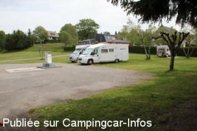
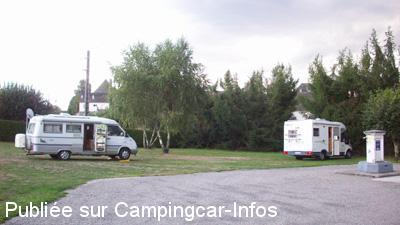

ASN = Aire de services avec stationnement nuit possible de :
SAINT PRIVAT
(N° 660)
Accès/adresse :
Rue des Chanaux
Lotissement Les Chanaux
19220 SAINT PRIVAT
Lotissement Les Chanaux
19220 SAINT PRIVAT
Latitude : (Nord) 45.14037° Décimaux ou 45° 8′ 25′′
Longitude : (Est) 2.09776° Décimaux ou 2° 5′ 51′′
Tarif : 2010
Stationnement gratuit
Services : 2 €
Type de borne : EURO-RELAIS
Services :


Centre ville, commerces à 200m
Autres informations :
Ouvert toute l'année.
10 emplacements
Près du centre de secours.
Tél Mairie : +33(0)555 282 877
Office du Tourisme : +33(0)555 282 583

Le 06/07/2012 par Renaud Delarroque

Le 28/03/2010 par TONY 16
de
carte
le 03/08/2015 :
Première fois que nous venons sur cette aire bien agréable spacieuse et calme ( ne pas stationner quand même près des containers à verre).Commune sympa avec tous les commerces
Première fois que nous venons sur cette aire bien agréable spacieuse et calme ( ne pas stationner quand même près des containers à verre).Commune sympa avec tous les commerces
de
mimi
le 09/08/2014 :
Nuit du 04 aout tres calme nous étions 4 cc
on se gare sur l herbe il y a une table de pique nique
bref l aire idéale pres des commerces le pain est super bon
Nuit du 04 aout tres calme nous étions 4 cc
on se gare sur l herbe il y a une table de pique nique
bref l aire idéale pres des commerces le pain est super bon
de
bourdelle andré
le 03/09/2011 :
aire très calme, village sympatique ,j'ai même fait la connaissance d'un jeune ecrivain :Sébastien Vidal ,qui a ecrit un roman ( les fantômes rebelles) dont le récit se passe pendant la résistance , en grande partie dans la région de st Privat.Ce qui donne envie , en le lisant ,de revenir découvrir cette magnifique région.
aire très calme, village sympatique ,j'ai même fait la connaissance d'un jeune ecrivain :Sébastien Vidal ,qui a ecrit un roman ( les fantômes rebelles) dont le récit se passe pendant la résistance , en grande partie dans la région de st Privat.Ce qui donne envie , en le lisant ,de revenir découvrir cette magnifique région.
de
mantoni
le 05/07/2011 :
de passage le 12/06/2011
aire sympathique,prés du tri sélectif merci pour la gratuité de l'endroit qui est prét des commerces services gratuit mais plus d'électricité
de passage le 12/06/2011
aire sympathique,prés du tri sélectif merci pour la gratuité de l'endroit qui est prét des commerces services gratuit mais plus d'électricité
de
jym17
le 24/01/2011 :
nuit du 20/01/2011
aire sympathique, hélas prés du tri sélectif (quel doux bruit des verres qui tombent dans le container à toutes heures et des moteurs des voitures qui ronronnent le temps que leur propriétaires effectuent leur geste éco-citoyen)
la panacée les éboueurs à 4hoo du matin
merci pour la gratuité de l'endroit qui est prét des commerces
nuit du 20/01/2011
aire sympathique, hélas prés du tri sélectif (quel doux bruit des verres qui tombent dans le container à toutes heures et des moteurs des voitures qui ronronnent le temps que leur propriétaires effectuent leur geste éco-citoyen)
la panacée les éboueurs à 4hoo du matin
merci pour la gratuité de l'endroit qui est prét des commerces
de
DUVERGER
le 18/07/2010 :
Petite aire, propre pour 4/5/6 CC. Aucun problème pour les services. Village agrèable à quelques minutes à pied avec tous les commerces. Possible petite promenade autour duc lac, juste au dessus.
Seul inconvénient, près du centre de secours. 2 départs en pleine nuit avec sirène. Bonjour le sommeil.
Petite aire, propre pour 4/5/6 CC. Aucun problème pour les services. Village agrèable à quelques minutes à pied avec tous les commerces. Possible petite promenade autour duc lac, juste au dessus.
Seul inconvénient, près du centre de secours. 2 départs en pleine nuit avec sirène. Bonjour le sommeil.
de
richard 26
le 26/12/2009 :
Aire calme et propre, borne en bon état et fonctionnelle. Merci pour l'info sur la fromagerie de Rilac (10 km); attention cependant horaires le dimanche toute la journée. Dans le secteur, une balade aux tours de Merle s'impose, site magnifique mais attention routes très étroites (11 km), génial en deux roues!!!.
Aire calme et propre, borne en bon état et fonctionnelle. Merci pour l'info sur la fromagerie de Rilac (10 km); attention cependant horaires le dimanche toute la journée. Dans le secteur, une balade aux tours de Merle s'impose, site magnifique mais attention routes très étroites (11 km), génial en deux roues!!!.
de
jacques chalavon
le 23/10/2009 :
Aire très sympa et calme. D'après le syndicat d'initiatives, la borne est régulièrement détériorée et la mairie en a marre... de la réparer !
Aire très sympa et calme. D'après le syndicat d'initiatives, la borne est régulièrement détériorée et la mairie en a marre... de la réparer !
de
jojo
le 28/09/2008 :
Aire toujours aussi sympa et calme. Si vous aimez le fromage, un petit crochet à la laiterie de Rilhiac en Xantrie, très bon rapport qualité/prix, fermée le mercredi.
Aire toujours aussi sympa et calme. Si vous aimez le fromage, un petit crochet à la laiterie de Rilhiac en Xantrie, très bon rapport qualité/prix, fermée le mercredi.